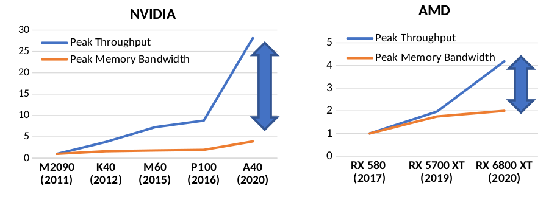

GPU vs CPU: Unleashing the Power of Parallel Processing for High-Performance Computing
Graphics Card
Have you ever played any Computer Games like FIFA, or Call of Duty? I am sure most of you will say yes.
Then you must have heard of Graphics Cards or GPUs. Generally, gamers use GPU for a better gaming
experience. Have you ever thought about why do we need a GPU when we already have a CPU that can do
anything? Why intel doesn't add another CPU for Video rendering? If you want to know the answer then you
are at the right place. Today you will get all of your answers on GPU. Just keep reading till the end.
What is CPU?
Before you know what a GPU is, you should know what a CPU is and the underline architecture of a CPU.
A Central Processing Unit, or CPU for short, is the brain of your computer. The main components of the
CPU are Control Unit (to regulate and integrate the operations), ALU (to do arithmetic and logical
operations), and Registers (to store data for fast processing). The sequence of actions performed for
instruction is fetching, decoding, doing mathematical computations, and writing to a memory address or
another register. CPU uses different levels of cache to access data from the main Memory or DRAM. One
can judge a CPU by its clock cycle, number of cores, and generation.
What is GPU?
Now, let's talk about GPU. A Graphics Processing Unit or GPU is one of the most complex components of a
computer, which handles all Graphics and video rendering parts. GPU is known for its parallel processing
capabilities. A GPU consists of thousands of small processing units, or "cores," that work together to
perform calculations simultaneously, which allows the GPU to process substantial amounts of independent
operations quickly and efficiently. To handle multiple processes simultaneously, GPU needs a large
memory bandwidth. Memory coalescing is a technique to reduce latency and increase memory access
efficiently. In this technique, GPU groups its threads into blocks. Each block accesses memory in a
specific pattern so contiguous and aligned blocks can be combined into a single transition.
Why do we need GPU?
Now, you know what GPU and CPU are. Now, look at this example. Many of us have our car. If we already
have cars, why do these racing cars even exist? If one uses normal cars for racing, he will never win a
single race. One cannot use racing cars for general purposes since they are specially made for racing.
GPU and CPU are like racing cars and normal cars respectively. CPU can do all work whereas GPUs are specially made for parallel
processing. GPU has too many cores for processing many things simultaneously. When you play a game,
a computer must render all objects for the game. All of these objects are independent. Cars, buildings, and
clouds all these objects in the game need to be created simultaneously and independently. GPUs are
incredibly good at that.
Can GPU replace CPU?
The short answer is no, GPU cannot replace CPU. While GPUs are incredibly powerful when handling
complex graphics and video rendering tasks, machine learning. But they lack the flexibility
and
versatility of CPUs. CPUs can handle a wide range of applications, including those that require a lot of
branching, decision-making, and input/output operations. They are also better suited for tasks that
require single-threaded performance, such as running single applications that are not highly
parallelizable. In addition, CPUs have more cache memory, which is essential for processing small
amounts of data faster. But GPUs have a large amount of memory, which is not faster than cache memory
found in CPUs. Hence, GPUs are the better choice for some specific industries like gaming, machine
learning, and scientific simulations. While GPUs are incredibly powerful, they cannot replace CPUs since
they cannot be used for general purposes. But the GPU industry is growing faster than the
CPU. In future, GPU will eventually surpass the CPU industry.
Scalability Issue in GPU
Till now, we have seen why and when we should use GPU. But there are some problems with GPU. The first
issue is Scalability. We cannot insert more GPUs because of these two factors. 1) Die Size Limitation 2)
Memory Access.
Die Size Limitation is the physical size limitation of any object in a computer. In the computer, every
component has its size limits so that all of them can be fitted on the computer board.
So, GPU has its die size limit. We cannot insert a large GPU in a Computer.
GPUs use parallel processing, so each process needs memory access. GPU's memory access is very high as
compared to CPU, which causes a large Compute-Memory Gap. Due to low memory bandwidth, more GPUs cannot
be used efficiently.

Timing Attacks in GPU
I have put this section under a different heading because this is the most important problem of a GPU. GPUs are
used in the Server to generate encrypted text from plaintext. But there is a correlation between the
time taken to encrypt a text and the private key used to encrypt data. One can send multiple text files
to the Server and get the encrypted file and the corresponding time to encrypt that data. Due to the
correlation between the time taken and the private key, one can generate that private key after sending
a large number of plaintext. This Timing Attack is a type of side-channel attack.
Solution of Timing Attacks
Let's talk about some solutions for Timing Attacks on Servers. None of the solutions are completely
perfect, always there is a trade-off between security and performance.
-
Naive Solution:
The most basic solution for this problem is, Disable coalescing altogether. This decreases the overall performance
by 178%. This solution is Good
for Security but Bad for Performance.
-
Randomization:
To decrease the correlation between the time taken
to encrypt and the private key, we can introduce a randomized memory access pattern. This will
make it difficult to guess the private key for the attackers.
-
Constant-Time Algorithms:
We make the execution time constant by waiting for a specific amount of time, which removes the
correlation. Hence, it takes the same amount of time for a small text as well as for a long
text, which decreases the overall performance of the server.
-
Bucketing for Coalesced Accesses:
Bucketing is the most useful technique to prevent timing attacks.
Here, we divide the memory into buckets of a range of addresses.
GPU first selects a random bucket to access the memory so that the time taken to access the
memory takes the same amount of time. Bucketing for coalesced accesses can be implemented in
several ways such as modifying the GPU's memory controller to include a bucketing function, and
software techniques.
It is crucial to recognize that these techniques are not independent of each other and can be employed
collectively to enhance the safeguarding against timing attacks in GPUs.
Conclusion
In conclusion, Graphics Processing Units (GPUs) are specialized processors that are designed to handle
complex graphics and video rendering tasks, machine learning, and scientific simulations. GPUs consist
of thousands of cores that work together to perform calculations simultaneously and are known for their
parallel processing capabilities. While GPUs cannot replace CPUs due to their lack of versatility and
flexibility, they are better suited for specific industries like gaming, machine learning, and
scientific simulations. However, GPUs face scalability issues, and their high memory access creates a
large Compute-Memory Gap, which limits the number of GPUs that can be used efficiently. Additionally,
GPUs are vulnerable to Timing Attacks, which are side-channel attacks that exploit the correlation
between the time taken to encrypt data and the private key used to encrypt it. To mitigate Timing
Attacks, solutions such as disabling coalescing and introducing randomized memory access patterns have
been proposed.
Arijit Saha
Arijit Saha is a Computer Science student pursuing his BTech degree at the Indian Institute of
Technology Bombay.This Blog is inspired by a talk given by Neel Gala, CTO/Co-Founder of
InCore Semiconductors.